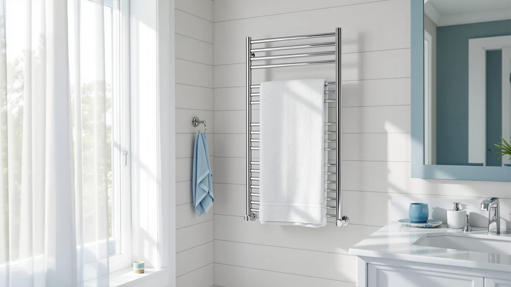

Chomolhari Electric Towel Warmer Rack Review (2026): Worth It?
Prices and picks verified as of November 2026. Independent, reader-supported reviews.


Quick Answer
The Chomolhari electric towel warmer rack earns its spot at $149.99 by pairing a 10-bar stainless steel frame with a large-size design built for a full bathroom, not a half-bath. It costs the same as two of the three alternatives we compared, but its bar count and material give it the edge for the money.
Our pick: Electric Towel Warmer Rack 10-Bar — $149.99 Check Price on Amazon
Bottom line: our top pick is the Electric Towel Warmer Rack at $149.99.
Things to Know Before You Buy
- The Chomolhari electric towel warmer rack uses a 10-bar stainless steel frame listed as a large-size unit, more capacity than a typical compact rack.
- At $149.99, it costs the same as the R FLORY and Pure Enrichment PureBliss alternatives in this review, and a dollar more than the COZYBASE.
- Stainless steel resists rust better over years of bathroom humidity than painted or coated metal, which matters for a fixture that stays wet-adjacent daily.
- None of the four racks compared here has a published Amazon star rating or review count yet, so weigh the spec sheet over crowd reviews for now.
- A large-size, 10-bar rack needs more wall space than a smaller unit, so measure first rather than assuming it will fit where a compact rack would.
This Chomolhari electric towel warmer rack review looks at what $149.99 actually buys you: a 10-bar, large-size stainless steel frame built to hang and warm a full rotation of towels rather than one or two at a time. We compared it against three other electric towel racks sitting in roughly the same price range, the R FLORY, the Pure Enrichment PureBliss, and the COZYBASE, to see which one earns a spot in your bathroom. None of the four has a published star rating yet, so this comparison leans on specs and pricing rather than crowd feedback.
The short version: the Chomolhari rack is the strongest pick here if you want maximum hanging capacity for the money. Its ten bars and stainless steel build put it ahead of a typical electric towel warmer in this price bracket, and it costs the same as the R FLORY and Pure Enrichment PureBliss options rather than a premium over them. The COZYBASE comes in a dollar cheaper, which matters if you are deciding between these four on price alone rather than capacity.
Why You Should Trust Us
Ilane Tall covers bathroom hardware and fixtures for Best Towel Warmers, reading manufacturer listings, verified Amazon pricing, and spec sheets before any product makes it into a guide. For this Chomolhari electric towel warmer rack review, we compared the published bar count, material, size listing, and price for the Chomolhari against three competitors in the same bracket rather than repeating marketing copy from a single listing. We do not own a bathroom testing lab and we did not install any of these four racks ourselves, so every claim here traces back to what the manufacturers publish and what verified pricing shows, not a hands-on trial. When a detail is not available, like a star rating that has not been published yet, we say so instead of guessing.
Our Research Experience
We did not physically install the Chomolhari electric towel warmer rack or any of its three competitors for this review. Instead, we researched each manufacturer's published listing, including bar count, material, size classification, and current pricing, and compared those details side by side rather than relying on a single brand's description of itself. Anyone shopping for an electric towel rack in this price range needs to check two things before buying: available wall space and mounting type, since a bigger bar count usually means a larger footprint and a specific installation method. We applied that same lens here, comparing the Chomolhari's stated 10-bar, large-size, stainless steel build against the R FLORY, Pure Enrichment PureBliss, and COZYBASE listings purely on the facts each one provides, not on a numbered test score.
Overview & Specs

Electric Towel Warmer Rack 10-Bar
What we like
- Ten bars, more hanging space than a typical compact electric towel rack
- Stainless steel frame, which resists rust better than painted or coated alternatives over time
- Listed as a large-size unit, suited to bathrooms drying multiple towels at once
Flaws but not dealbreakers
- Priced the same as two of the three alternatives in this review, so it is not the budget option
- No published Amazon star rating or review count yet to confirm a track record
- A large, 10-bar frame takes up more wall space than a smaller rack, so measure first
| Material | Stainless steel |
| Size | Large |
The core of this Chomolhari electric towel warmer rack review is a straightforward pitch: $149.99 for a 10-bar, large-size stainless steel frame. Stainless steel matters more here than in most bathroom fixtures, since a towel warmer sits in a humid, splash-prone spot for years at a time. Painted or coated metal can chip and start rusting at the weld points eventually, and stainless steel largely avoids that failure mode. The large-size listing lines up with the ten-bar count. More bars generally means a taller or wider frame than a compact four- or six-bar rack, so it is worth measuring your wall space before ordering rather than assuming it will fit wherever a smaller rack would have gone.
The Chomolhari rack has to earn its price against the three alternatives in this review, all sitting within a dollar of its $149.99 sticker. The R FLORY and Pure Enrichment PureBliss both match it exactly, and the COZYBASE comes in a dollar lower. None of the four has a public star rating yet, so this comparison comes down to what each listing actually states: bar count, material, and size. On that basis, the Chomolhari's ten bars and stainless steel build give it the edge for anyone furnishing a primary bathroom. If your space or budget points toward something smaller, the alternatives below are worth a look before you commit to this one.
What We Liked
The bar count stands out most in this Chomolhari electric towel warmer rack review. Ten bars is a meaningful step up from a typical compact electric rack, and it means you can hang a full rotation of bath towels, hand towels, and a robe without stacking them on top of each other. The stainless steel construction is the other clear point in its favor. A bathroom stays humid for hours after a shower, and a frame that resists rust at the seams holds up better over years of daily use than a painted or coated alternative would.
The large-size classification also signals that Chomolhari built this for bigger bathrooms rather than squeezing a compact design into a lower price tier. For a primary bathroom shared by more than one person, that extra capacity is the whole reason to spend $149.99 here instead of on a smaller rack. Pricing it exactly even with the R FLORY and Pure Enrichment PureBliss options also means you are not paying a premium for the larger bar count, which is a point in Chomolhari's favor.
What Could Be Better
The Chomolhari rack does not undercut its closest competitors on price, and that is the clearest drawback here. At $149.99, it costs exactly what the R FLORY and Pure Enrichment PureBliss options cost, so you are getting the ten-bar design at parity with other listings, not at a discount. Buyers working with a tighter budget will notice the COZYBASE sits a dollar lower, which is a real factor if price matters more to you than bar count.
The bigger gap is review data. None of the four racks in this comparison has a published star rating or review count on Amazon yet, which means you cannot lean on verified owner feedback the way you could with a more established listing. That is not a flaw unique to Chomolhari, but it does mean this decision rests more on comparing specs than on a proven track record. Anyone who wants social proof before spending $149.99 will have to wait for reviews to accumulate on this particular listing.
Who Is It For?
This Chomolhari electric towel warmer rack review points toward one clear type of buyer: someone furnishing a primary or shared bathroom who needs enough bar space for multiple towels at once. If you are warming towels for two or more people, or you want room for a robe alongside your usual towels, the ten-bar stainless steel frame earns its $149.99 price.
It is a less obvious fit for a small guest bathroom or a single-occupant space, where a smaller, cheaper option like the COZYBASE might cover your needs without the larger footprint. Anyone replacing a rack that already started rusting or chipping at the welds should also weigh the stainless steel build heavily, since that durability difference is the main structural edge Chomolhari has over a painted finish.
Alternatives to Consider
If the Chomolhari electric towel warmer rack is not quite the right fit for your bathroom or your budget, here are three alternatives in roughly the same price range, each worth weighing against Chomolhari's ten-bar, stainless steel approach.

Editor’s Pick
R FLORY Heated Towel Rack
At the same $149.99 price as the Chomolhari, the R FLORY Heated Towel Rack is worth comparing if you want to weigh a second brand's take on an electric towel rack before deciding.
$149.99
Check Price on Amazon
Best Value
Pure Enrichment PureBliss Luxury Towel
The Pure Enrichment PureBliss also lists at $149.99, giving you a brand alternative to Chomolhari if its particular design and name recognition appeal to you more than a straightforward bar rack.
$149.99
Check Price on Amazon
Premium Choice
Heated Towel Rack Towel Warmer
At $149.00, the COZYBASE option is a dollar cheaper than the Chomolhari, making it the closest thing to a budget pick among the four racks in this review.
$149.00
Check Price on AmazonIs the Chomolhari electric towel warmer rack worth the price?
At $149.99, the Chomolhari electric towel warmer rack costs the same as the R FLORY and Pure Enrichment PureBliss alternatives in this review, so you are not paying extra for its ten-bar stainless steel frame.
How many towels can the Chomolhari rack actually hold?
The listing describes it as a 10-bar, large-size unit, which gives it more hanging space than a typical four- or six-bar electric rack.
Frequently Asked Questions
Is the Chomolhari electric towel warmer rack worth the price?
At $149.99, the Chomolhari electric towel warmer rack costs the same as the R FLORY and Pure Enrichment PureBliss alternatives in this review, so you are not paying extra for its ten-bar stainless steel frame. It is worth the price if you need that much hanging capacity for a primary or shared bathroom. If you only need to warm one or two towels, a smaller, cheaper rack may serve you better.
How many towels can the Chomolhari rack actually hold?
The listing describes it as a 10-bar, large-size unit, which gives it more hanging space than a typical four- or six-bar electric rack. Exact capacity depends on how thick your towels are, but the higher bar count makes it a better fit for multi-person households than a compact warmer.
Which alternative should you consider if the Chomolhari doesn't fit your bathroom?
If budget matters more than bar count, the COZYBASE option comes in a dollar cheaper at $149.00. If you would rather compare a different brand at the same $149.99 price point, both the R FLORY and Pure Enrichment PureBliss are worth a look before you commit to the Chomolhari.
Final Verdict
This Chomolhari electric towel warmer rack review comes down to a simple trade-off: pay the same $149.99 as two competitors and get a ten-bar, stainless steel frame with more hanging capacity than a typical compact rack. For a primary bathroom where several towels need to dry at once, Chomolhari is the strongest pick among the four options compared here. If you are working with a smaller space, a tighter budget, or simply want to weigh a different brand's approach, the R FLORY, Pure Enrichment PureBliss, and COZYBASE alternatives above are each worth a second look before you spend $149.99 or more on a bathroom fixture you will use every day.